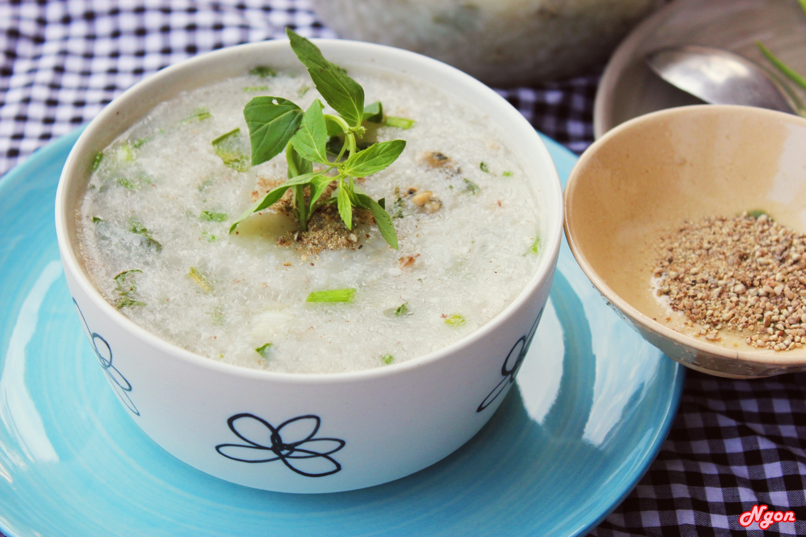

INGREDIENTS
75g jasmine rice
75g glutinous rice (optional, you can use one kind of rice)
150g oyster
150g ground pork
shallot
ginger
spring onions
vietnamese mints (or other herbs)
roasted onion flakes
1,5-2l water

⇒To get more instructions. Please watch the guide video behind